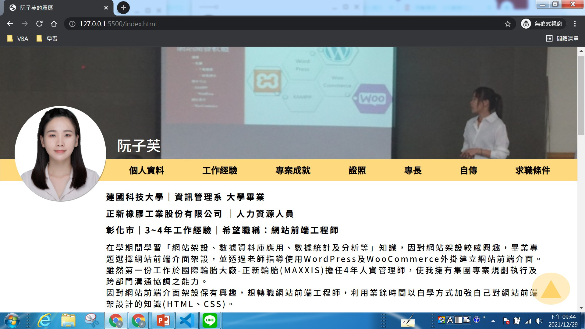
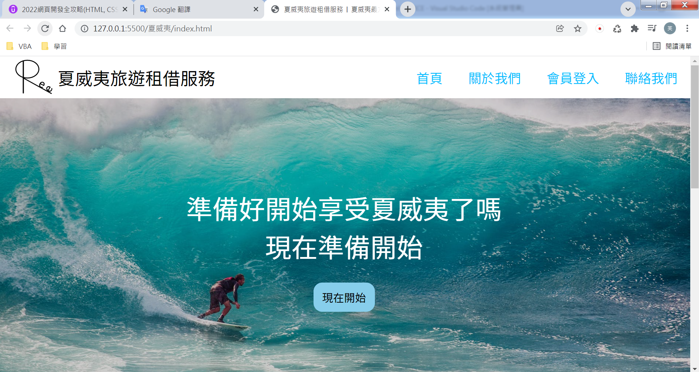
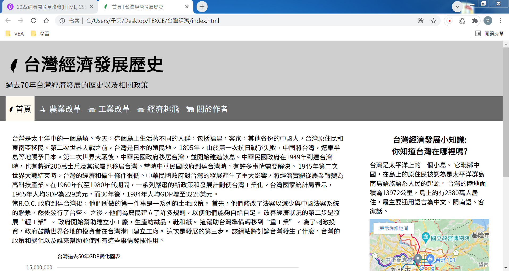
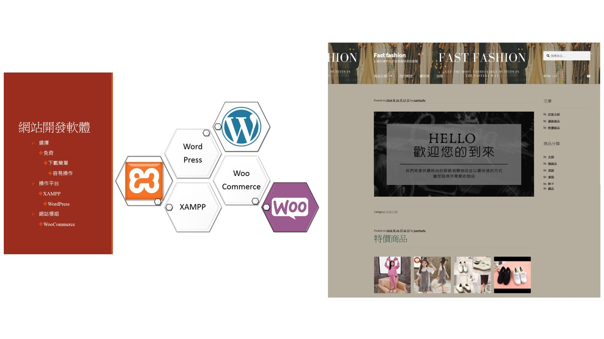
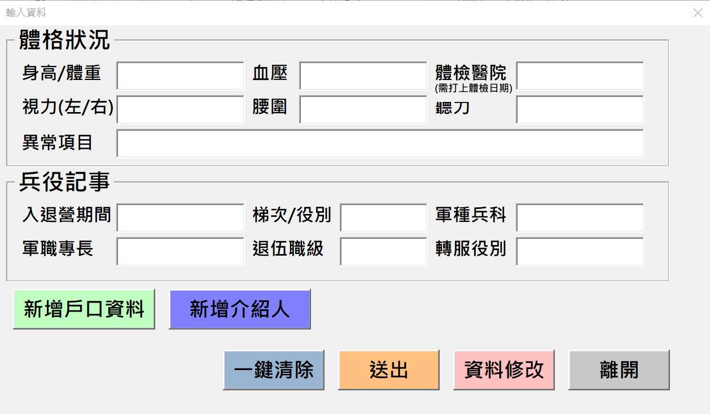

夏威夷租借網
│依照自主學習時，講師所提出之主題，運用已下技能建立出相同Home介面的網頁
│運用HTML5基本內容、標籤和元素建立架構
│運用CSS3進行網頁美編排版，並進行基礎RWD設定

台灣經濟發展歷史簡介
│依照自主學習時，講師所提出之主題，運用已下技能建立出相同介面的網頁
│運用HTML5基本內容、標籤和元素建立架構
│運用CSS3進行網頁美編排版，並進行基礎RWD設定

購物網站前端介面建立
│擔任組長及專案發表之角色
│規劃與組織組員進行資料蒐集、系統分析、軟體試用、網站頁面設計、系統測試等
│使用WordPress及WooCommerce外掛建立購物網站
│主要網頁介面排版設計使用WooCommerce外掛進行，並使用WordPress進行後台管理
│專題成績最終取得平均95分

透過Excel巨集以及函數簡化資料建檔及分析
│建立新進人員基本資料輸入介面，使資料對應輸入於Excel表單欄位內
│每月培訓報告資料比對重複性較高之動作，透過巨集錄製及函數搭配，縮短時間1.5天作業時間
│全公司法定證照資料盤點，透過巨集錄製及函數搭配，縮短3天資料索引、比對、拆分之時間